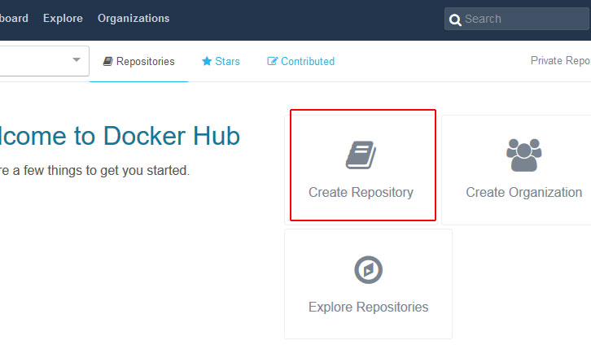

Creating a Docker Repository

-
Fill out the repository details (be sure to set the Visibility drop-down to either public or
private), then click Create.
-
On the next page you will find details about your new repository, including the docker pull
command for your images.
Pushing an Image to Your Docker Hub Repository
To upload (push) an image to your Docker Hub repository, you must first prepare the image. It will need:
-
Your Docker Hub username or the name of your Docker Hub organization.
-
The name of your Docker Hub repository.
-
Optional: A version tag. (If no tag is specified, it will default to "latest.")